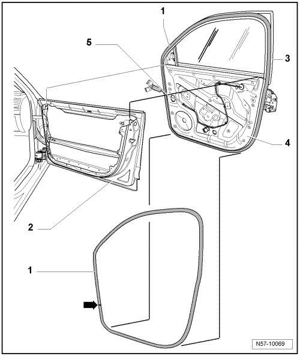

Outer Door Seal
Front Door
Outer Door Seal
At the factory, sealant is applied to the door seals. They are they positioned on the door flange and rolled on.
• During removal of the seal, sealant is distributed on interior side of seal and the sides can be bent open easily. If the seal is being installed again, the sealing performance and proper seating are no longer guaranteed.
• For this reason, every completely removed seal must be replaced with a so-called "hammer-stroke seal".
• With partially removed seals, press the edges of the seal together before installing.

- To remove outer door seal - 1 -, the door trim and subframe, consisting of the window frame - 3 - and assembly carrier - 4 -, must be removed.
- Remove subframe. Refer to --> [ Door Lock ] Door Lock.
- Remove the outer door seal from the door flange.
- When installing outer door seal, align vulcanization point - arrow - with opening for cables - 5 - in assembly carrier - 4 -.
- Do not stretch outer door seal so that it will not become too long.
- Install subframe in outer door panel again and secure.
- Make sure that sealing lip of outer door seal is laid uniformly.